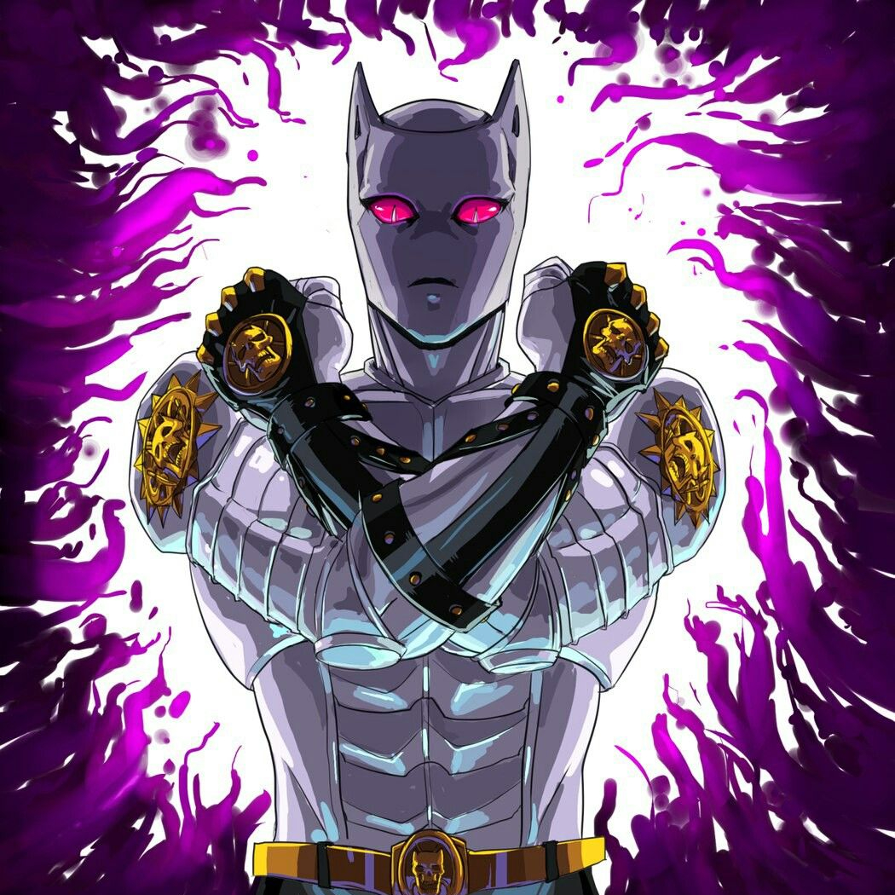
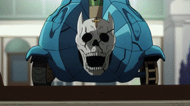
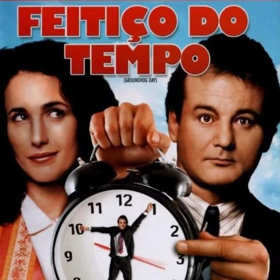
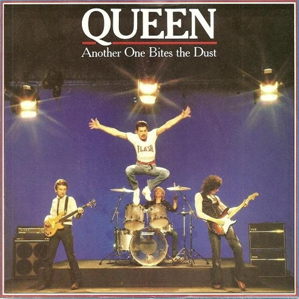

"Eu quero uma vida pacífica, porém a minha natureza é matar".
Despercebido em Morioh por anos e imperturbável toda a sua vida, Yoshikage Kira é um serial killer anormal e parafílico cuja rotina é abalada quando o fantasma de sua primeira vítima, Reimi Sugimoto, implora ao Grupo Joestar para procurá-lo e ele atrai atenção indesejada ao matar Shigekiyo Yangu. Kira é uma usuária de stand e empunha a poderosa Killer Queen que tem a capacidade de criar bombas mortais.
Killer Queen

Killer Queen é o Stand de Yoshikage Kira, e faz sua primeira aparição na Parte IV da série.
Killer Queen é uma Stand humanóide de curto alcance com uma velocidade mediana a acima da media e grande força física. Sua habilidade especial envolve plantar ou utilizar três tipos de bombas, geralmente capazes de consumir seus alvos completamente; embora suas explosões não sejam perigosas para mais de um alvo, nem perceptíveis para não-usuários de Stand. O principal defeito dessa habilidade é que só uma bomba pode ser ativada por vez (e só uma de cada tipo de bomba).
Bomb Transmutation
Através do toque, Killer Queen pode energizar um objeto como se fosse uma bomba. Se um objeto energizado é tocado, a energia é transmitida do objeto ao alvo antes de explodir e, geralmente, destruí-lo completamente. Kira também pode detonar essa bomba quando quiser.
Sheer Heart Attack

Essa bomba se separa da mão esquerda de Killer Queen, da qual é parte. É completamente autônoma, com um alcance ilimitado. Ela procura qualquer coisa que for mais quente ao seu redor, e então induz uma explosão ali, com um poder proporcional a temperatura do alvo. O corpo de Sheer Heart Attack é totalmente indestrutível. Sendo uma parte da mão de Killer Queen, qualquer efeito externo causado a ele é transferido para a mão de Kira.
Bites the Dust
Quando ativada, Killer Queen se separa de Kira e é implantado em um hospedeiro; ele age independentemente da vontade de Kira, se manifestando apenas quando a bomba é engatilhada. Quando implantada, ela ativa quando a identidade de Kira é revelada para alguém. Quando isso ocorre, um Killer Queen em miniatura entra no olho da pessoa e causa uma explosão, o matando.
Depois de matar alguém com seu poder, o Bites the Dust cria um loop temporal, voltando no tempo em aproximadamente uma hora antes da detonação. Pelo fato do Bites the Dust ser completamente independente e autonomo, Kira não é ciente de quem é morto por ele, nem é diretamente ciente de que um loop temporal ocorreu. Todas ações realizadas no loop temporal passado tornam-se o destino, significando que elas estão destinados a ocorrer como se nada houvesse acontecido. Pequenas diferenças podem surgir, mas qualquer pessoa morta pelo Bites the Dust em um loop temporal passado está destinada a explodir no exato mesmo momento em que eles foram previamente mortos.
Curiosidades

Bites the Dust pode ser inspirada no filme Feitiço do Tempo, onde o protagonista Phil Connors (interpretado por Bill Murray) fica preso em um loop temporal e precisa reviver o mesmo dia de novo e de novo até que ele mude seu comportamento.
As habilidades de seu Stand parecem ter tido inspiração de vários versos da música Killer Queen - "She's a Killer Queen (Ela é uma Rainha Assassina) / Gunpowder, gelatine (Pólvora, gelatina)/ Dynamite with a laser beam (Dinâmite com raio laser) / Guaranteed to blow your mind (É garantia de explodir sua mente) / Anytime (A qualquer hora)". Além disso parece haver também uma inspiração visual – "Playful as a pussy cat (Brincalhona feito uma gatinha)"

O nome desse Stand e suas habilidades parecem ser baseadas em três canções do Queen: Killer Queen, Sheer Heart Attack e Another One Bites the Dust.